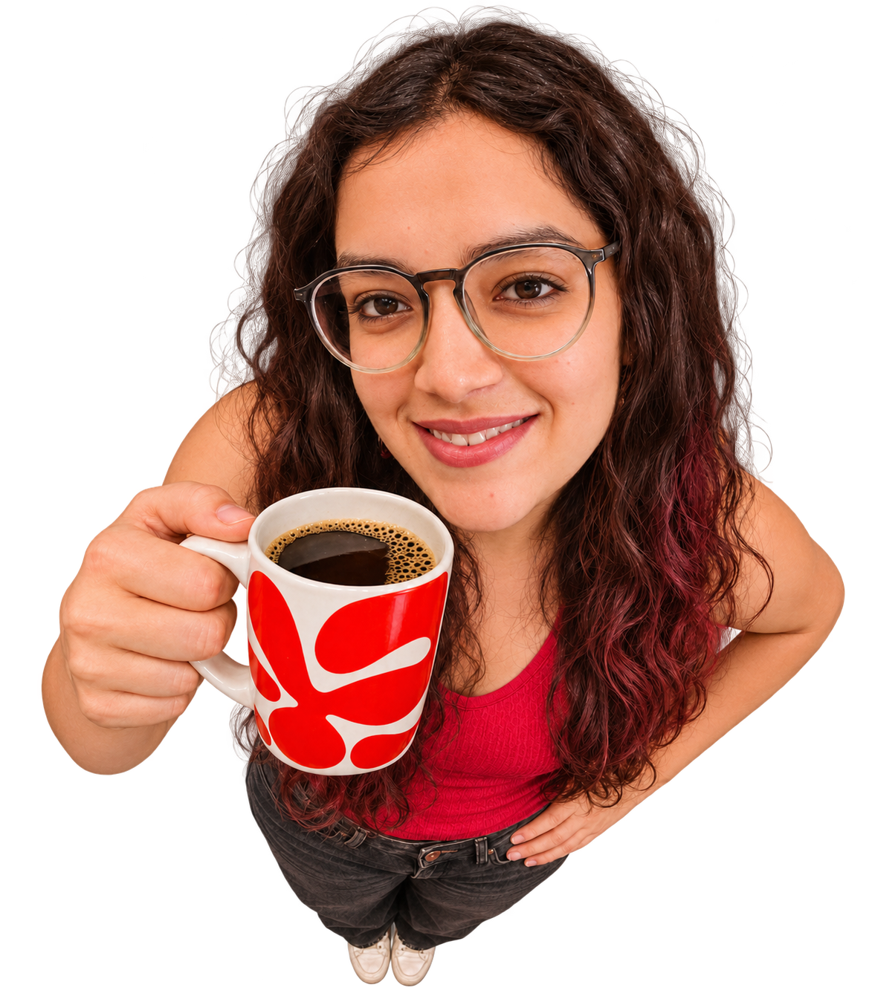

Timmo
Timmer with leaderboard and analytics.
Live
A clean productivity app for tracking time and staying consistent. Focus, manage tasks, and visualize your progress with insightful stats.




prev a summer intern @
Accenture Song
I connect what people need with what a business is striving to achieve, then ideate, sketch and build ideas that bring the two together.
Timmo
Timmer with leaderboard and analytics.
A clean productivity app for tracking time and staying consistent. Focus, manage tasks, and visualize your progress with insightful stats.